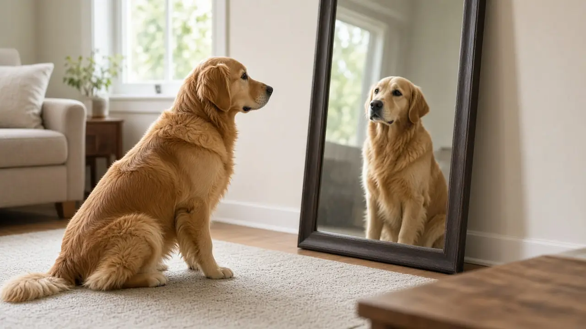

Do dogs recognize themselves in a mirror? Not by sight, but maybe by smell
Dogs do not pass the classic mirror test, so there is no good evidence that they recognize their own reflection. But dogs live in a world of smell, and a 2017 study in Behavioural Processes built an "olfactory mirror" from each dog's own urine. Dogs sniffed their own scent longer when it had been changed with an extra odour, which the author reads as a sign that they recognize the scent as their own.

The classic mirror test
In 1970 the psychologist Gordon Gallup reported in Science that chimpanzees given time with a mirror began to use it to inspect parts of their own bodies. When they were later marked with dye on spots they could only see in the mirror, they touched the marks. This mark test became the standard check for mirror self-recognition. Dogs have not passed it: as the 2017 study below notes, dogs do well on many social thinking tasks but have not passed the test of mirror self-recognition.
Why a mirror may be the wrong test for dogs
Alexandra Horowitz of Barnard College argued that a visual test may not suit a species whose main sense is smell, and that dogs may not be motivated to care about a mark on their fur. So she designed a smell version of the test, based on how dogs naturally sniff the scent marks of other dogs.
The olfactory mirror study
Dogs were offered canisters to sniff. In the key test one held the dog's own urine, the "olfactory mirror", and another held the dog's own urine with an extra odour added. Dogs spent longer investigating their own scent when it was modified than when it was not, which Horowitz reads as recognising the scent as being of or from themselves. Dogs also spent longer on the scent of other known or unknown dogs than on their own. In a second experiment they spent longer on the modified sample than on the added odour by itself, which suggests novelty alone does not explain the result.
What this does and does not show
The study suggests dogs can tell their own scent from changed versions and from other dogs, which is a kind of self-recognition by smell. It does not prove that dogs have self-awareness in the human sense, and it is one study that other labs would need to repeat.
What this means for owners
- Barking at a mirror is normal. Some dogs react to their reflection and others ignore it. Either is fine, and neither tells you how clever your dog is.
- Let your dog sniff on walks. Scent is how dogs gather information about other dogs and themselves (see dog behavior and can dogs smell fear?).
Frequently asked questions
Do dogs recognize themselves in a mirror?
There is no good evidence they do by sight. Dogs have not passed the classic mirror mark test.
Can dogs recognize their own smell?
A 2017 Behavioural Processes study found dogs sniffed their own urine longer when an extra odour was added, suggesting they recognize their own scent.
Why does my dog ignore its reflection?
No one knows for sure, but dogs rely heavily on smell and a reflection carries no dog scent, which may be one reason it holds little interest.
Sources
- Horowitz A (2017). Smelling themselves: Dogs investigate their own odours longer when modified in an 'olfactory mirror' test. Behavioural Processes 143: 17-24. DOI 10.1016/j.beproc.2017.08.001, Behavioural Processes
- Gallup GG Jr (1970). Chimpanzees: self-recognition. Science 167(3914): 86-87. DOI 10.1126/science.167.3914.86, Science
General education only, not veterinary advice. If you are worried about your dog, contact your vet; in an emergency, contact an emergency vet straight away.